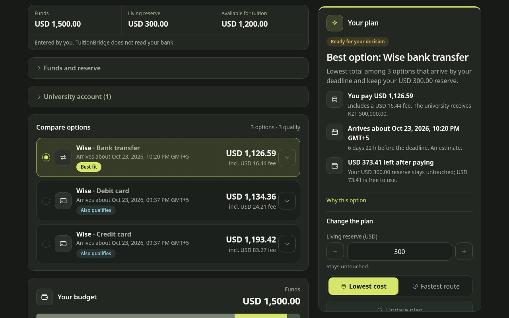
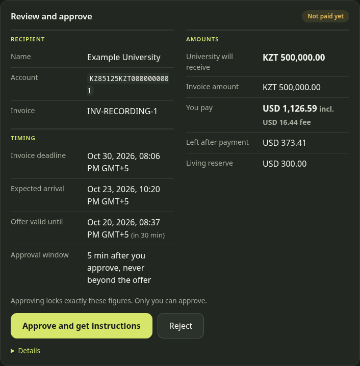

Tuition payment planning for international students
The student's payment problem
Tuition is billed in tenge.
Rate and fees decide what you pay in dollars.
Money must arrive before it, not just be sent.
Rent and food must stay covered.
This is our understanding of the problem. No student interviews have been run yet.
2How TuitionBridge helps
One total in dollars, fee included.
Expected arrival compared with the invoice deadline.
Your living money stays untouched.
Why this option, and why the others were not chosen.
These are the benefits we designed for. We have not measured time or money saved.
3The payment journey
TuitionBridge prepares the plan. You approve it. The provider moves the money.
4Live screen

123Screenshot of the running app, 20 October 2026. Real Wise quotes and a local test model. Quotes change by the minute.
5A route comparison
Tuition KZT 500,000.00 · funds USD 1,500.00 · living reserve USD 300.00
| Payment method | You pay | Fee | University receives | Arrives | Left after paying |
|---|---|---|---|---|---|
| Bank transferLowest total | USD 1,126.80 | USD 16.44 | KZT 500,000.00 | 23 Oct | USD 373.20 |
| Debit card | USD 1,134.57 | USD 24.21 | KZT 500,000.00 | 23 Oct | USD 365.43 |
| Credit card | USD 1,193.64 | USD 83.28 | KZT 500,000.00 | 23 Oct | USD 306.36 |
Wise quote snapshot: 20 October 2026, 12:13 UTC. Amounts are as Wise quoted them and are not guaranteed. All three are payment methods of one provider. Each keeps the USD 300.00 reserve.
6The AI's role
The AI cannot approve a payment or change an amount.
7Approval and payment safety

What we measured, and what we did not
231/231
unit and integration tests pass
30/30
browser tests pass (test model)
30/30
fixed cases pass, 12/12 critical, 0 unauthorized payments
Test data and a stand-in AI. It checks the server rules, not a real model.
Not a full live test. Not bank-certified. Not production-ready.
9What comes next
Every student sees the full cost, the arrival date and a safe reserve before they pay.
10